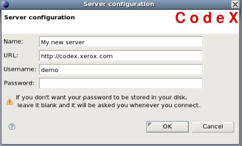

Pour utiliser le plugin CodeX, la première chose à faire est de configurer (au moins) un serveur.
La configuration d'un serveur est stockée dans les préférences Eclipse.
Vous pouvez visualiser toutes les configurations des serveurs en
regardant les préférences du plugin CodeX (
Window >
Preferences... >
CodeX >
servers).
Il existe aussi un raccourci pour accéder directement aux préférences
des serveurs : presser le bouton "préférences"
 dans la vue "CodeX".
dans la vue "CodeX".
Pour ajouter un serveur CodeX, vous pouvez
cliquer sur l'icone "ajouter un serveur"
 dans la barre d'outils de la vue "CodeX",
dans la barre d'outils de la vue "CodeX",faire un clic droit dans la vue "CodeX" et sélectionner "ajouter un serveur",
sélectionner Window > Preferences... > CodeX > serveurs ; et cliquer sur le bouton "New..."
Toutes ces actions mènent au même écran :
|  |
Pour modifier un serveur, vous pouvez
effectuer un clic droit sur un serveur dans la vue CodeX et cliquer sur "Modifier un serveur",
sélectionner Window > Preferences... > CodeX > serveurs ; choisir la configuration à modifier et cliquer sur le bouton "Edit...".
Toutes ces actions mènent au même écran (le même que pour ajouter un serveur, sauf que les données sont remplies avec la configuration courante du serveur).
Après avoir effectuer des modifications, cliquer sur le bouton Appliquer pour les enregistrer. La configuration sera alors enregistrée et stockée.